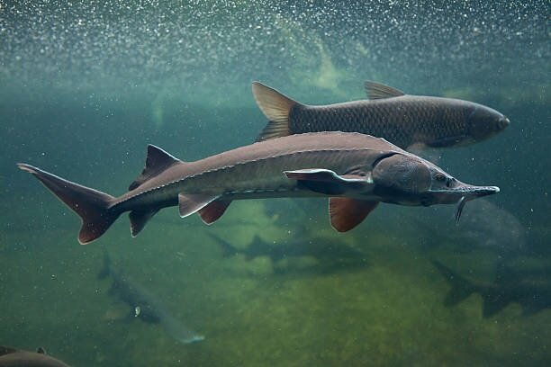
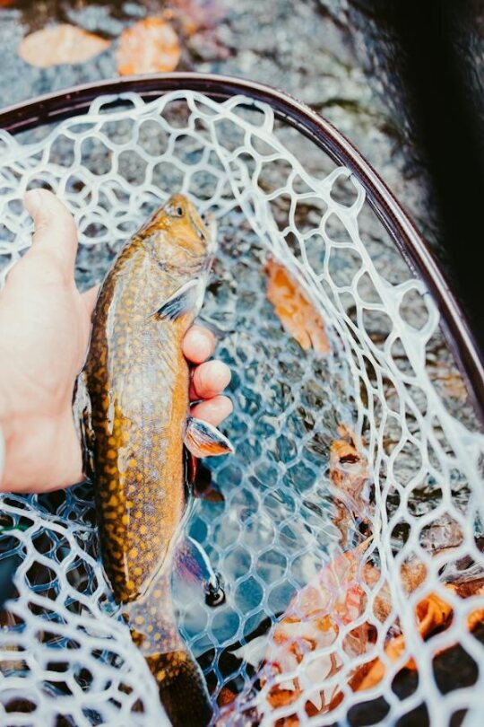
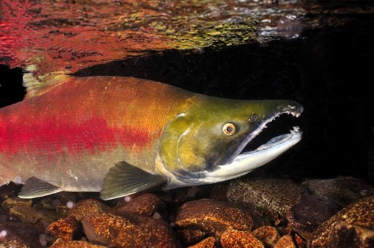

Overview
Purpose
A website for nature lovers who are curious about native Idahoan fish species! It will provide information and locations about these species.
Audience
Fishermen and those who enjoy wildlife. Age range 12 to 80. People who love animals and aquatic life.
Branding
Website Logo

Style Guide
Color Palette
Palette URL: https://coolors.co/fcf4d8-2b3e69-001953-b7b8b3| Primary | Secondary | Accent 1 | Accent 2 |
|---|---|---|---|
| [#fcf4d8] | [#2b3e69] | [#001953] | [b7b8b3] |
Typography
Heading Font: DM Serif Display
Paragraph Font: Noto Sans
Normal paragraph example
Fish are aquatic, vertebrate animals commonly found throughout the world. They are best known for their gills, fins, and streamlined bodies, designed perfectly for swimming. Using their gills, fish are able to extract oxygen from the water they live in. Fish are cold-blooded, which allows them to thrive in diverse habitats, as their body temperature adjusts to constantly match their surroundings. Fish are covered in scales, which protects their body from friction underwater and protects their delicate skin.
Colored paragraph example
Fish are aquatic, vertebrate animals commonly found throughout the world. They are best known for their gills, fins, and streamlined bodies, designed perfectly for swimming. Using their gills, fish are able to extract oxygen from the water they live in. Fish are cold-blooded, which allows them to thrive in diverse habitats, as their body temperature adjusts to constantly match their surroundings. Fish are covered in scales, which protects their body from friction underwater and protects their delicate skin.
Navigation
Site Map
Content
Home page
Fish are aquatic, vertebrate animals commonly found throughout the world. They are best known for their gills, fins, and streamlined bodies, designed perfectly for swimming. Using their gills, fish are able to extract oxygen from the water they live in. Fish are cold-blooded, which allows them to thrive in diverse habitats, as their body temperature adjusts to constantly match their surroundings. Fish are covered in scales, which protects their body from friction underwater and protects their delicate skin.
Idaho has a high variety of fish species. Anglers from around the world visit Idaho to enjoy its rich recreational fishing opportunities. Idaho boasts numerous freshwater rivers, lakes, and streams, which support important populations of both native species, including bull trout and steelhead, and introduced game fish, such as rainbow trout. Idaho is also known for its serious efforts in conservation, aimed at protecting endangered species, such as cutthroat trout and sockeye salmon.
Furthermore, Idaho's diverse aquatic ecosystems provide habitats for a wide range of fish species, offering anglers an array of fishing experiences throughout the state. From the rugged mountain streams of the Sawtooth Range to the expansive reservoirs like Lake Pend Oreille, Idaho's waters cater to anglers of all skill levels and preferences. Whether fly fishing for native cutthroat trout in remote backcountry streams or trolling for trophy kokanee salmon in the larger lakes, Idaho offers something for every angler's taste.
Images for the Home page


Fish Species
The white sturgeon, scientific name Acipenser transmontanus, is an ancient species of cartilaginous fish native to the Snake River in Idaho. The white sturgeon is the largest fish in North America, known to reach lengths of up to 20 feet and weigh over 1,500 pounds! White sturgeon are characterized by their elongated bodies, bony plates called scutes (instead of traditional scales), and their distinctive snouts with four barbels, just like a catfish! They are considered “living fossils” because they have remained unchanged for millions of years.
The brook trout, scientifically known as Salvelinus fontinalis, is a species of freshwater fish native to eastern North America. Brook trout are not native to Idaho waters, but they were introduced because of their popularity for recreational fishing. Brook trout are easily identified from their distinctive, one-of-a-kind coloration and unique worm-like markings called vermiculations. Brook trout live in cold, clear, well-oxygenated water. They prefer habitats with plenty of cover and hiding places. They are known as opportunistic feeders, eating everything from insects, smaller fish, and crustaceans.
Oncorhynchus nerka, more commonly known as the sockeye salmon, is a species of anadromous (living in freshwater AND saltwater) fish native to the Pacific Ocean and its tributaries. Sockeye salmon have sleek, streamlined bodies and metallic-blue coloration. During the spawning season, males develop an iconic hooked jaw and vibrant red bodies! They are a large species of salmon, reching lengths of 24 to 33 inches and weighing anywhere from 5 to 15 pounds. Sockeye salmon are best known for their epic spawning migration, when they travel hundreds of miles from the ocean to breed in the same freshwater rivers and streams where they were born. Sockeye salmon are a particularly tasty species and make great table fare.
Images for the Page 2
  FAQ
What are the most common fish species found in Idaho waters? The most common fish species found in Idaho include trout, such as brook and rainbow trout, bass species such as largemouth and smallmouth bass, grass and common carp, and mountain whitefish. Different locations will contain different populations of fish species. You can find what fish populate what regions by consulting the Idaho Fish and Game.
What are some popular fishing destinations in Idaho? Idaho is known for its wide variety of freshwater fishing destinations. Henry’s Lake is known for its trophy trout fishing, and is also one of the only spots in Idaho where you can catch the coveted cutthroat trout. The Snake River is famous for its prolific insect hatches and fantastic fly fishing opportunities. Additionally, be sure to check out Priest Lake in northern Idaho, and do your best to land a giant mackinaw or kokanee salmon.
Can you fish year-round in Idaho, or are there specific seasons? Fishing is generally allowed year-round in Idaho. While certain regulations may apply to specific fish species, waters, and methods, most bodies of water are open for recreational fishing any time of year. Anglers should always consult the regulations provided by the Idaho Department of Fish and Game to ensure they follow all regulations where they intend to fish.
What unique challenges are facing fish populations in Idaho? Human activities such as land development have led to the loss of critical fish habitiats, including migration paths and spawning areas. Additionally, pollution from agricultural runoff and industrial discharge have heavily tainted Idaho’s waterways. Invasive species such as the tiger mussel have wreaked havoc on natural populations and outcompete for food and space. Idaho environmentalists must take action to maintain an ecological balance!
How can I obtain an Idaho fishing license? Fishing licenses can be purchased online from the Fish and Game website or an authorized license vendor. Make sure to purchase the best kind of fishing license that suits your needs, whether that be an annual license, hunting and fishing combo, or short-term license. You will need to provide your social security number. After paying the fee, you will receive your fishing license either electronically or printed physically.
Images for the Page 3

Wireframes
Create three wireframes for your site. One for each page and list them here